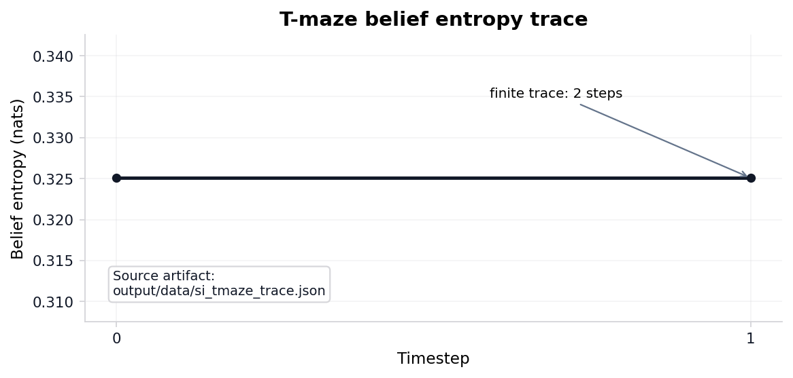
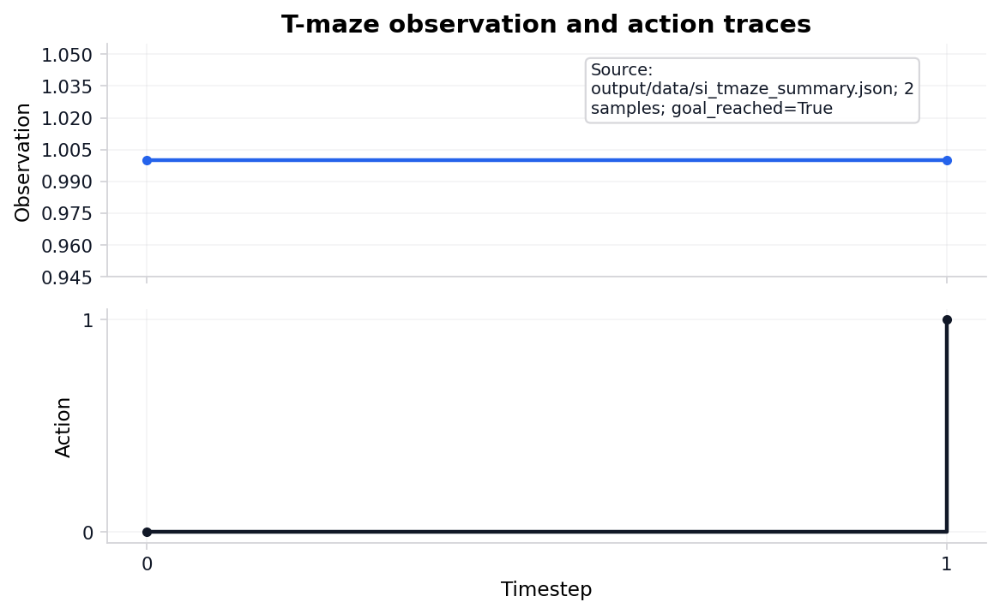
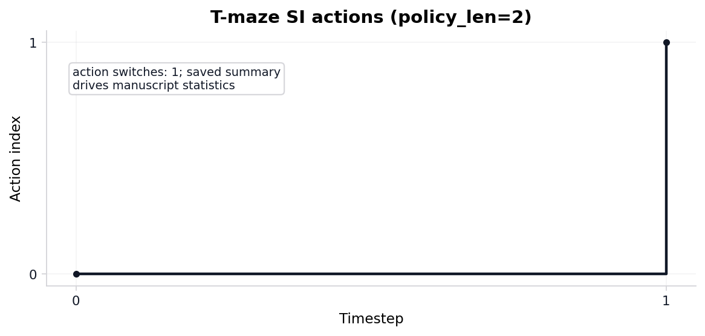

T-maze active-inference rollout
The pymdp harness rolls out a T-maze active-inference agent in
state_inference mode with planning horizon 2. The default
state_inference mode is belief filtering with a
goal-seeking action rule; sophisticated policy inference (an
expected-free-energy policy posterior) is selectable via
mode: policy_inference ([sec:methods_pymdp]). Summary
metrics land in output/data/si_tmaze_summary.json.
Steps recorded: 2. Mean belief entropy: 0.3251. Belief entropy over
the rollout is traced in [fig:si_belief_entropy_curve]; the paired
observation and action indices are in [fig:si_obs_action_trace].
output/data/analysis_statistics.json now records the trace
as a small statistical object rather than a caption-only trace: action
switches 1 times (rate 1.000 over adjacent steps), observation diversity
is 1, entropy drop is 0.0000 nats from first to terminal step, and the
saved trace/summary step counts agree: true with finite
entropy values true. The default
state_inference mode runs pymdp infer_states
and reports the resulting posterior (belief entropy and
the state-1 marginal), but the action is chosen by an open-loop scripted
rule on the observation index — not by the posterior — so the inferred
belief here is observed, not acted on. Under the toy transition model,
expected-free-energy policy inference reaches the goal in 1 of its rows
versus 2 for the scripted state-inference rule: no behavioral advantage
on this two-state, horizon-2 maze, which is the measured content of the
deliberately-too-small claim.
Policy-comparison rows: 4 across state-inference and policy-inference modes; goal-reaching rows: 3. These rows are internal toy consistency checks under finite-horizon discrete active-inference assumptions [friston2021sophisticated; dacosta2023reward], not comparisons against external behavioral datasets. Graph-world extension rows: 4 over 4 nodes, with goal-reached flag 1.
The expected free energy that scores those policies decomposes in
closed form ([fig:efe_decomposition]). Across the 4 length-2 policies on
the T-maze generative model, the expected-free-energy-minimising policy
is 00 with \(G\) = 2.2539
nats, splitting into risk 1.6037 (the pragmatic deviation of predicted
outcomes from preferences) and ambiguity 0.6502 (the expected likelihood
entropy) nats. The same \(G\) splits
equivalently into pragmatic value -2.2539 (expected log-preference) and
epistemic value 0.0000 (state-outcome mutual information) nats — the
term that drives information-seeking. The two forms are exactly equal:
risk + ambiguity + pragmatic + epistemic vanishes to within 0.0e+00
across every policy, the action-selection twin of the analytical
free-energy decomposition identity ([sec:results_free_energy]).
Precision controls how sharply that expected free energy is acted on: the policy posterior is the softmax-weighted \(q(\pi) \propto \exp(-\gamma\,G(\pi))\), and sweeping the inverse temperature \(\gamma\) across 33 grid points up to 16 sharpens it monotonically ([fig:precision_sweep]). Posterior entropy falls from \(\ln 4\) at \(\gamma\)=0 to 1.1458 nats at \(\gamma\)=1, then saturates at the floor 0.6931 nats rather than reaching zero: the absorbing goal makes the second action irrelevant once reached, so 2 policies tie at the expected-free-energy minimum and precision concentrates mass on that optimal set, not a single policy. By that honest criterion selection becomes effectively deterministic — optimal-set mass exceeding 0.99 — at \(\gamma\)=3.
The minimal two-state maze above is, by construction, too small for information-seeking to matter: the reward location is observable from the start, so a greedy pragmatic rule and an expected-free-energy rule reach the goal equally often. The cue-then-reward variant ([fig:cue_tmaze_advantage]) removes that degeneracy. Across 8 joint position-by-context states the reward location is an uninformative latent (50/50 at the start) that is hidden until the agent visits a CUE location, at which point a single sample resolves it: the cue carries 0.6931 nats of information (\(= \ln 2\), the entropy of the unknown context). An agent that samples the cue and then takes the contingent arm reaches reward with expected log-preference -0.0538 nats, against -4.0538 nats for a greedy agent that commits to an arm before sampling — a measured behavioural advantage of 4.0000 nats that vanishes only if epistemic value is removed from the objective. The advantage is sophisticated, not flat: the closed-form flat decomposition of [sec:results_si_tmaze] scores the cue-first and greedy policies as identical because it propagates beliefs through the transition model without conditioning them on the cue observation. Resolving the latent therefore requires an observation-conditioned (sophisticated-inference) evaluation, and under that evaluation cue-sampling is strictly necessary rather than merely available.
Planning is only half of the generative loop: the agent must also learn its likelihood. Placing a Dirichlet prior over each column of \(A\) and accumulating observation-state counts \(c\) gives the conjugate update \(pA \leftarrow pA + c\) with expected likelihood \(E[A] = pA / \sum_o pA\) ([fig:dirichlet_convergence]). Driven by a fixed, sampling-free expected-count stream, \(\mathrm{KL}(A_{\text{true}} \,\|\, A_{\text{learned}})\) falls monotonically from 0.7361 nats at the uniform prior to 1.29e-03 nats, reaching the convergence tolerance at update step 3. The learned likelihood converges to the true generative model in closed form, the inference-side twin of the EFE planning decomposition above.
Rollout trace: output/data/si_tmaze_trace.json. JSONL
run log: output/logs/pymdp_runs.jsonl.




